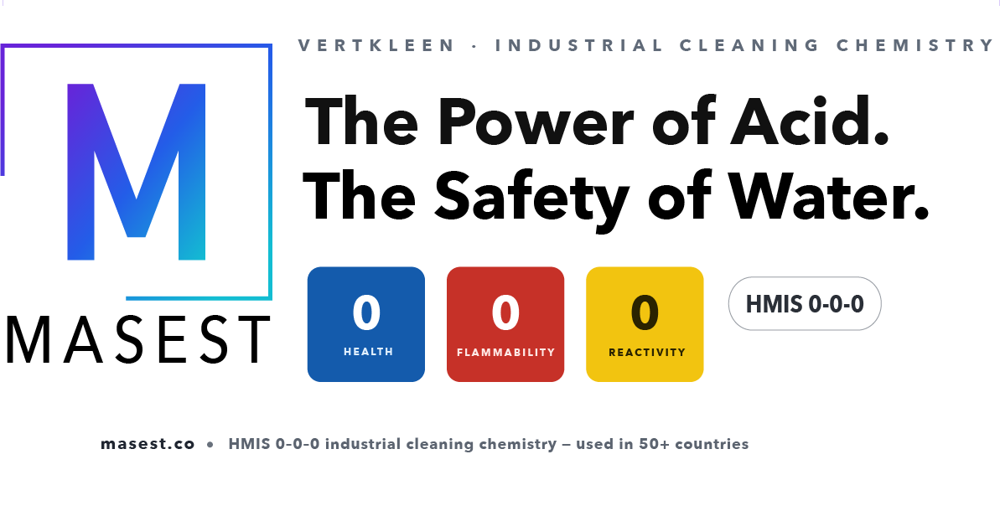

50% ethylene glycol blend
Small packs ship from stock where available; drums, totes, and program supply are quoted.
- Industrial loop top-offs
- Closed-loop freeze protection
- Heat-transfer maintenance
Ready-to-use inhibited EG for routine industrial loop maintenance and top-offs. A ready-to-use inhibited 50% ethylene glycol blend for industrial heat-transfer and freeze-protection loops. 50% ethylene glycol blend Small packs ship from stock where available; drums and totes are quoted.

Small packs ship from stock where available; drums, totes, and program supply are quoted.